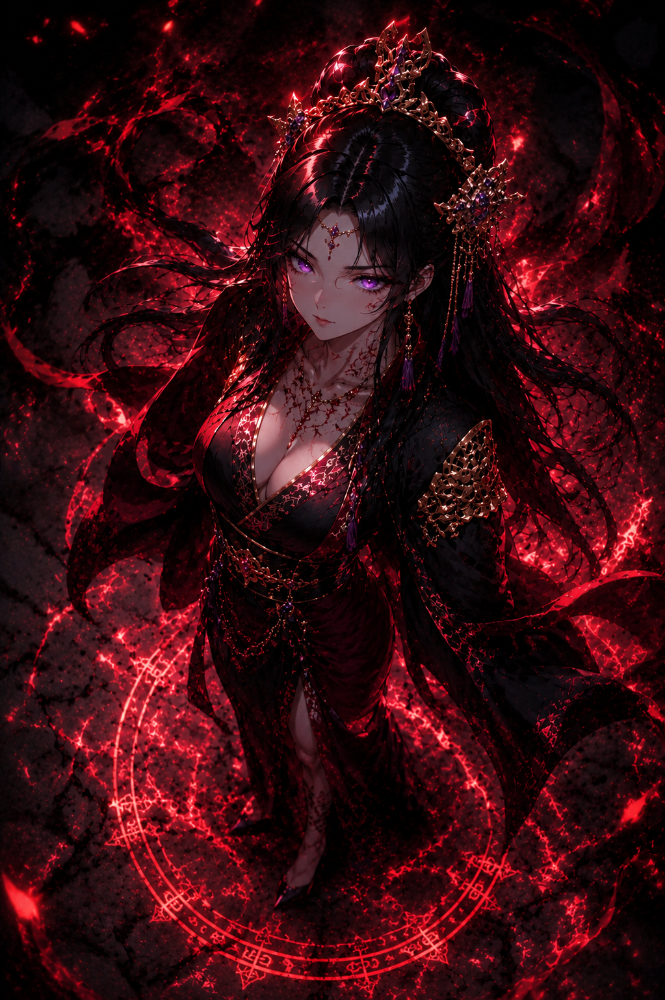

“Em tempos de monstros, até a esperança precisa aprender a sobreviver.”
A Herdeira Que Caminha Entre Guerra e Esperança
Hana Hayashi é a filha mais velha do Imperador Hayashi e uma das figuras mais influentes dentro do clã. Criada no coração da política imperial, cresceu cercada por estratégias militares, negociações diplomáticas e pelo peso constante da guerra que ameaça consumir o mundo.
Diferente de muitos nobres, Hana nunca se apoiou apenas no nome da própria linhagem. Desde jovem demonstrou inteligência, equilíbrio emocional e uma capacidade rara de compreender as pessoas além das aparências.
Durante o ataque dos Oni ao território Hayashi, Hana viu o verdadeiro horror da guerra sobrenatural. Presa dentro de seus próprios aposentos enquanto um Oni tentava assassiná-la, foi salva por Takeshi Kurosawa num instante que mudou completamente o rumo de sua vida.
O homem que a retirou dos braços da morte não era um nobre. Não era um general famoso. Era o filho de um curtidor.
Ainda assim, Hana reconheceu nele algo que poucos homens da corte possuíam: honra verdadeira.
Após os acontecimentos da guerra contra os Onizuka e da destruição causada pelos Oni, Hana tornou-se uma peça central na reconstrução política do império.
Foi ela quem apoiou oficialmente a criação do Território Kurosawa, legitimando Takeshi como novo governante das antigas terras de Onizuka sob proteção de Hayashi.
Contudo, a aproximação entre os dois ultrapassou lentamente os limites da política.
Hana passou a admirar Takeshi não apenas como guerreiro, mas como homem. Sua humildade, lealdade e força silenciosa contrastavam violentamente com os nobres arrogantes aos quais ela esteve acostumada durante toda a vida.
Em uma decisão estratégica apoiada pelo Imperador Hayashi, Hana propôs unir seu destino ao de Takeshi através de casamento, consolidando assim a aliança entre Hayashi e o recém-formado Clã Kurosawa.
Porém, para Hana, aquilo nunca foi apenas uma decisão política.
Em um mundo consumido por monstros, sangue amaldiçoado e guerras intermináveis, Takeshi representava algo raro: um homem que ainda lutava para proteger pessoas, não apenas poder.
Enquanto outros carregam espadas, Hana carrega o futuro de Hayashi nos próprios ombros.
“Não é a força que mantém um império vivo. É aquilo que ainda vale a pena proteger.”